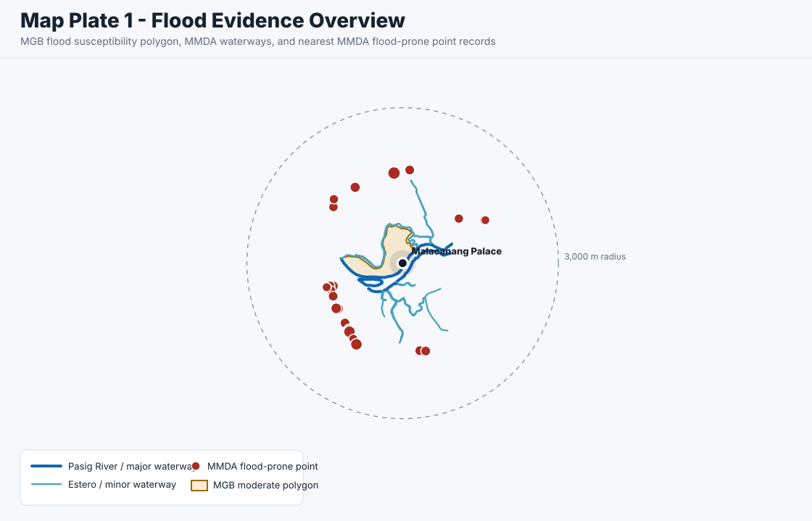
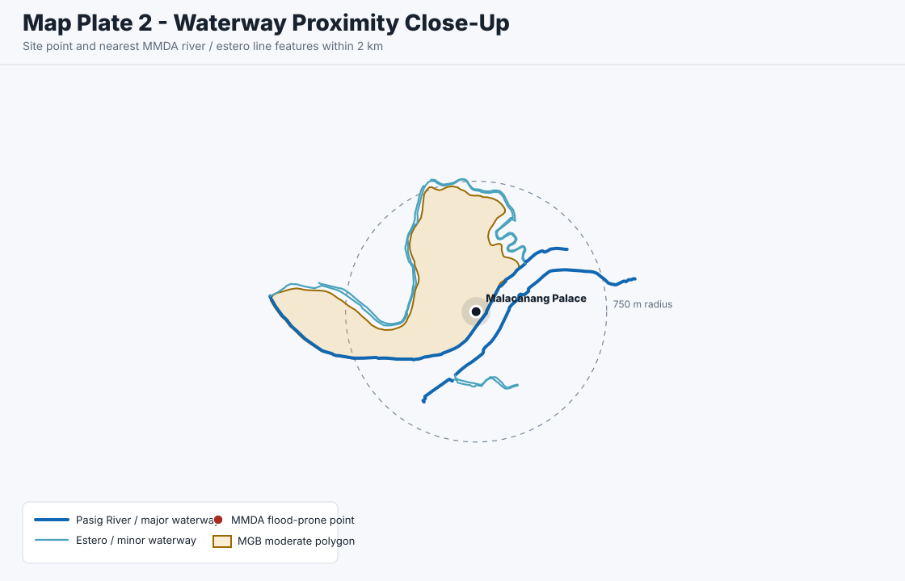
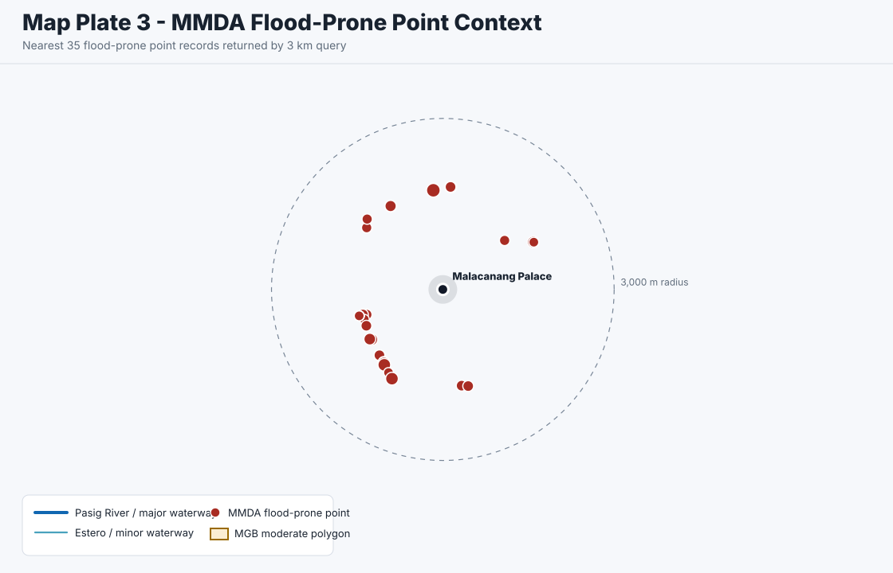

The map plates in this report are derived GIS visualizations of queried public vector layers. They are not official cartographic flood map products. The official flood maps themselves are created upstream by agencies using geohazard mapping, remote sensing, field/geologic interpretation, hydrologic and hydraulic modeling, and published hazard-class rules.
Malacanang Palace Flood Hazard Screening Report
Methodology Correction
MGB Flood Class
Moderate
Nearest MMDA River Line
51.9 m
Nearest MMDA Flood-Prone Point
1.38 km
Computed Screening Result
Elevated
Executive Finding
The representative point for Malacanang Palace intersects the DENR-MGB / GeoRiskPH flood susceptibility layer as Moderate Flood Susceptibility. The MGB class definition for Moderate susceptibility is expected flood height greater than 0.5 meter up to 1 meter, with likely duration of 1 to 3 days.
The site also lies approximately 51.9 meters from the nearest MMDA river-line geometry identified as Pasig River. This does not change the MGB susceptibility class, but it is material context for a flood hazard screening because the site is directly river-adjacent.
The nearest MMDA flood-prone point within the queried 3 km radius is approximately 1.38 km away at Magsaysay/Pureza. The closest repeated MMDA flood-prone cluster is around Manila City Hall and vicinity, approximately 1.41 km away, with records in 2019, 2022, 2023, and 2024.
How The Official Flood Maps Are Actually Created
| Map Family | How It Is Created | Inputs / Model Basis | What The Classes Mean | Source |
|---|---|---|---|---|
| MGB Flood Susceptibility / Geohazard Maps | Geohazard assessment and mapping at 1:50,000 and 1:10,000 scales. MGB methodology includes interpretation of remote-sensing data and thematic maps, ground truthing, geomorphological/geological assessment, and local accounts. | Aerial photographs, satellite images, geologic maps, drainage maps, slope maps, vegetation maps, field checks, geomorphic setting, and evidence from affected communities. | Susceptibility classes are tied to likely flood depth, likely duration, and geomorphic setting such as active or abandoned channels, river banks, fluvial terraces, alluvial fans, infilled valleys, low hills, gentle slopes, and drainage density. | MGB Geohazard Assessment and Mapping Program |
| MGB Published Flood Susceptibility Classes | MGB classifies mapped areas into Low, Moderate, High, and Very High flood susceptibility. | Flood height and duration thresholds, supported by geohazard mapping and geomorphic interpretation. | Low: 0.5 m or less; Moderate: greater than 0.5 m up to 1 m; High: greater than 1 m up to 2 m; Very High: greater than 2 m. High and Very High classes are associated with longer duration and topographic lows such as river channels and riverbank areas. | MGBPublic Flood MapServer |
| Project NOAH Flood Hazard Maps | Hydrologic and hydraulic flood modeling for rainfall return-period scenarios, converted into flood hazard and flow-depth maps. | Rainfall return periods, river-basin hydrology, DEM/LiDAR or other topographic data, HEC-HMS rainfall-runoff modeling in DREAM basin reports, and FLO-2D GDS Pro flood routing / inundation simulation. | NOAH flood layers use Low, Medium, and High hazard classes. In the BetterGov/NOAH PMTiles documentation, value 1 is Low, value 2 is Medium, and value 3 is High; classes are tied to flood depth and can also account for velocity. | Project NOAH Hazard Maps documentation |
| DREAM / NOAH River-Basin Reports | Floodplain subbasins are delineated from DEM elevation values. FLO-2D simulations produce hazard and flow-depth outputs, then ArcMap prepares final map products. | DEM-derived catchments, calibrated hydrologic model outputs, discharge estimates, FLO-2D Mapper Pro hazard and flow-depth outputs, and GIS map layout preparation. | Outputs include flood inundation, hazard, and flow-depth shapefiles for mapped scenarios. | DREAM Flood Forecasting and Flood Hazard Mapping report |
| HazardHunterPH Flood Display | HazardHunterPH displays existing agency hazard information from GeoRiskPH. It can also show DOST-ASTI AI-derived flood impact maps against DENR-MGB flood susceptibility layers. | DENR-MGB flood susceptibility information and DOST-ASTI Sentinel-1 SAR-derived flood impact products. | DOST-ASTI flood impact maps are AI-identified from Sentinel-1 SAR composites and are explicitly flagged as not ground-validated, with lower thematic accuracy possible in urban and forested areas. | HazardHunterPH map and disclaimers |
Map Plates



Site Basis
| Field | Value | Source / Method |
|---|---|---|
| Place | Malacanang Palace | NHCP Registry |
| Address Context | Jose P. Laurel Street, San Miguel, Manila | NHCP Registry location statement |
| Analysis Point | Latitude 14.593947; longitude 120.994349 | Representative point used for GIS layer intersection; not a cadastral boundary |
| Administrative Join | City of Manila, National Capital Region; City PSGC PH133901000 | MMDA city / municipality boundary FeatureServer |
Layer Findings
MGB Flood Susceptibility
- Result
- fscode 02
- Feature
- objectid 121954
- Last edited
- 2025-11-05 02:04:09 UTC
- Method
- Point-in-polygon query
MMDA River / Waterway Proximity
- Nearest
- Pasig River
- Distance
- 51.9 meters
- Queried
- 2 km radius
- Features
- 76 river-line features returned
MMDA Flood-Prone Points
- Nearest
- Magsaysay/Pureza (WB)
- Distance
- 1,381.5 meters
- Queried
- 3 km radius
- Features
- 93 flood-prone point records returned
Project NOAH Scenario Flood Layers
- Available
- 5-year, 25-year, 100-year flood PMTiles
- Fields
- Var 1 low, 2 medium, 3 high
- Status
- Pending PMTiles point-query implementation
HazardHunterPH / GeoRiskPH
- Use
- Official manual cross-check
- Flood Source
- MGB flood layer
- Status
- Not automated in this report
PAGASA Flood Hazard Maps
- Use
- Published map reference where coverage exists
- Status
- No automated site point result in this report
MGB Class Interpretation
| Code | Class | Likely Flood Height | Likely Duration | Site Result |
|---|---|---|---|---|
| 01 | Low | 0.5 meter or less | 1 to 3 days | No |
| 02 | Moderate | Greater than 0.5 meter up to 1 meter | 1 to 3 days | Yes |
| 03 | High | Greater than 1 meter up to 2 meters | More than 3 days | No |
| 04 | Very High | Greater than 2 meters | More than 3 days | No |
Nearest MMDA Flood-Prone Point Records
| Rank | Location | Year | Amount | Distance From Site | Object ID |
|---|---|---|---|---|---|
| 1 | Magsaysay/Pureza (WB) | 2021 | 0.25 m | 1,381.5 m | 112 |
| 2 | Around Manila City Hall and Vicinity | 2022 | 0.30 m | 1,405.8 m | 125 |
| 3 | Around Manila City Hall and Vicinity | 2024 | 0.30 m | 1,466.6 m | 127 |
| 4 | Around Manila City Hall and Vicinity | 2019 | 0.20 m | 1,471.3 m | 124 |
| 5 | Around Manila City Hall and Vicinity | 2023 | 0.30 m | 1,482.2 m | 126 |
Nearest MMDA River / Waterway Line Features
| Rank | Name | City | Distance From Site | Object ID |
|---|---|---|---|---|
| 1 | Pasig River | Manila City | 51.9 m | 987 |
| 2 | Pasig River | Manila City | 166.1 m | 959 |
| 3 | Estero de San Sebastian | Manila City | 377.2 m | 954 |
| 4 | Estero de San Sebastian | Manila City | 382.9 m | 1022 |
| 5 | Estero de San Ibanez | Manila City | 383.1 m | 961 |
Methods And Query Log
| Layer | Query Method | Returned Evidence | Source |
|---|---|---|---|
| MGB Flood | ArcGIS REST point-in-polygon; geometry 120.994349,14.593947; WGS84 | 1 intersecting polygon; fscode 02 | MGBPublic Flood MapServer |
| MMDA City Boundary | ArcGIS REST point-in-polygon; geometry 120.994349,14.593947; WGS84 | City of Manila, NCR; PH133901000 | MMDA boundary FeatureServer |
| MMDA Flood-Prone Areas | ArcGIS REST point-distance query; 3 km radius; local distance calculation | 93 point records; nearest 1,381.5 m | MMDA Flood-Prone Areas FeatureServer |
| MMDA River Line | ArcGIS REST point-distance query; 2 km radius; local point-to-line distance calculation | 76 line features; nearest Pasig River 51.9 m | MMDA River Line FeatureServer |
| Project NOAH Flood | Source inspected; point result not computed in this report | PMTiles source available; flood_5yr, flood_25yr, flood_100yr use Var 1/2/3 | Project NOAH Hazard Maps dataset mirror |
Professional Interpretation
Hazard Statement
The site should be treated as having documented flood susceptibility, not as a no-hazard site. The controlling official computed classification in this report is MGB Moderate Flood Susceptibility. River adjacency is a separate geomorphic and exposure consideration and should be retained as a high-attention note in any due-diligence packet.
Confidence
Confidence is medium-high for the MGB and MMDA layer intersections because the public ArcGIS services returned direct geometry hits and live feature responses. Confidence is lower for parcel-level implications because the analysis uses one representative point and not a surveyed property boundary, floor elevation, drainage invert data, or hydraulic model output.
Limitations
- This is a public-data flood hazard screening, not an engineering flood study, official certification, insurance determination, or legal opinion.
- The analysis point is representative. A full assessment should evaluate the palace complex boundary, finished-floor elevations, riverbank protection, drainage outfalls, and local flood-control infrastructure.
- MMDA flood-prone points are point records and should not be interpreted as flood polygons.
- Project NOAH return-period flood layers were inspected as a source but not point-queried in this report because a PMTiles/vector-tile lookup pipeline has not yet been implemented locally.
- HazardHunterPH should be used as a manual official cross-check before publication or operational reliance.
Sources
| Source | Use In Report | URL |
|---|---|---|
| NHCP Registry | Place and address context | philhistoricsites.nhcp.gov.ph |
| DENR-MGB / GeoRiskPH Flood MapServer | Official flood susceptibility class | MGBPublic Flood MapServer |
| MMDA City Boundary FeatureServer | Administrative join | MMDA boundary layer |
| MMDA Flood-Prone Areas FeatureServer | Local flood-prone point evidence | MMDA flood-prone areas layer |
| MMDA River Line FeatureServer | River and waterway proximity | MMDA river line layer |
| Project NOAH Hazard Maps | Scenario flood method reference, pending point lookup | Project NOAH PMTiles documentation |
| HazardHunterPH | Official manual cross-check surface | hazardhunter.georisk.gov.ph/map |